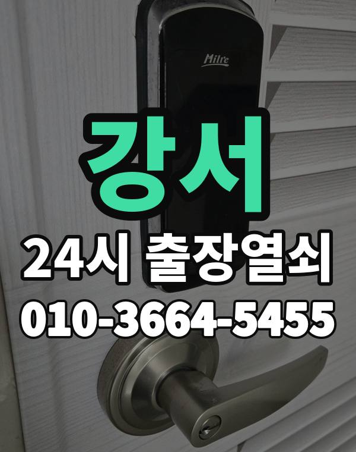

강서 출장열쇠, 이런 동네입니다
강서구는 마곡, 가양동 아파트와 화곡동 빌라, 공항동, 방화동 주택가까지 동서로 넓은 곳입니다.
화곡동은 다세대가 특히 많아 골목 안쪽 건물이 많습니다.

강서구 출장 가는 동네
- 염창동
- 등촌동
- 화곡동
- 가양동
- 마곡동
- 발산동
- 공항동
- 방화동
염창동 출장열쇠, 등촌동 열쇠집처럼 동네 이름으로 찾으셨어도 같은 곳입니다.
적혀 있지 않은 동네도 강서구 안이면 다 갑니다.
강서에서 하는 일
강서 출장, 이렇게 알려주세요
마곡 쪽 오피스텔은 건물 출입이 되는지 미리 알려주시면 기다리는 시간이 줄어듭니다.
동네가 넓어 위치를 먼저 듣고 도착 시간을 말씀드립니다.
발산역, 마곡역, 화곡역, 가양역 근처라고 말씀해 주셔도 위치 잡기가 쉬워집니다.
가까운 역이나 큰 건물, 단지 이름을 같이 알려주세요.
- 도로명 주소나 건물 이름
- 도어락 사진 한 장 (문자로)
- 신분증, 우편물 등 사시는 걸 확인할 것
전화부터 작업까지 순서는 이용안내에 적어 두었습니다.
강서 출장열쇠 관련 글
- 강서구 발산동 상가와 사무실 출입문 도어락, 영업 전에 막혔을 때 순서대로 풀기
- 강서 방화동 빌라 도어락 고장, 집주인과 세입자가 함께 정리할 때 볼 것들
- 강서구 등촌동 현관 방범 점검, 집에서 차분히 살펴보는 요령
- 강서 등촌동 장마철 습기와 겨울 결로에 도어락이 오락가락할 때 살필 점
- 강서 가양동 도어락 카드키와 태그를 잃어버렸다면, 오늘 할 일과 내일 할 일
- 강서 가양동 아파트 도어락 임시 비밀번호, 손님과 도우미에게 알려줄 때 쓰는 법
- 강서구 공항동 주택가에서 열쇠집 고르는 기준, 전화로 꼭 물어볼 질문들
- 강서구 화곡동 한파 오는 날 도어락이 느려지거나 꺼질 때 미리 알아둘 점
- 강서구 화곡동 빌라 현관 비파손 개방, 문을 상하지 않게 연다는 말의 뜻
- 서울 강서 마곡동 오피스텔 호실 문이 잠겼을 때 건물 안에서 먼저 할 일
- 서울 강서 마곡동 오피스텔 자취방과 쉐어하우스 출입문, 막혔을 때 정리
- 서울 강서구 염창동 가족 도어락 비밀번호, 언제 바꾸고 어떻게 함께 쓰면 좋을까
- 서울 강서 염창동 도어락 교체 전에 따져볼 것과 비용을 안내받는 방식
강서 출장열쇠 자주 묻는 질문
강서 어느 동네까지 오시나요?
염창동, 등촌동, 화곡동, 가양동, 마곡동, 발산동 등 강서구 전 지역 갑니다. 적혀 있지 않은 동네도 강서구 안이면 출동합니다.
새벽에 강서에서 전화해도 되나요?
밤이든 새벽이든 받습니다. 어디인지 들으면 언제쯤 도착하는지 바로 말씀드립니다.
끝내 못 열면 돈은 어떻게 되나요?
열지 못하면 비용은 없습니다. 작업 전에 금액을 듣고 정하시면 됩니다.
본인 확인은 어떻게 하나요?
사시는 분이 맞는지만 확인되면 됩니다. 신분증이나 우편물을 준비해 주세요.
강서 도어락 새로 다는 것도 되나요?
네, 문 열기와 함께 도어락 수리, 설치, 교체도 합니다. 고쳐서 되면 교체는 권하지 않습니다.